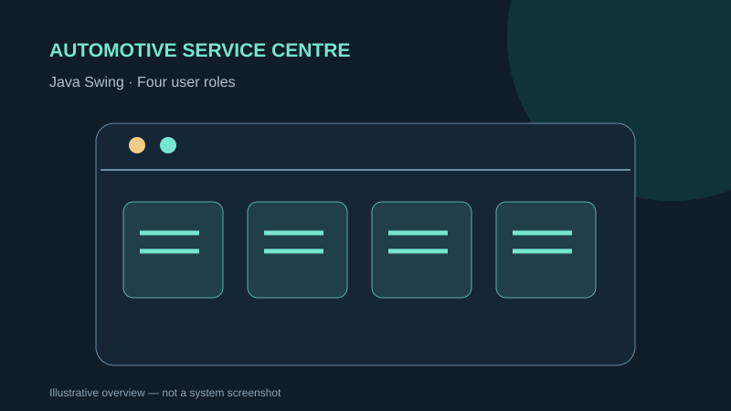

JAVA · DESKTOP DEVELOPMENT
APU Automotive Service Centre
A role-based Java Swing desktop application for an automotive service workshop.
JavaSwingOOPFile persistence

Concept illustration · descriptive artwork, not a screenshot of the submitted system
OVERVIEW
What the project is about
The group application organizes appointments, payments, service pricing and customer records across separate manager, counter-staff, technician and customer dashboards.
MY DOCUMENTED WORK
My contribution
- Participated in the four-person Java coursework project; the submitted document assigns a 25% workload share to each member.
- Exact ownership of individual Java classes or screens is not established by the uploaded report.
METHODS & DELIVERABLES
Key work covered
- Manager and staff role-based workflows
- Appointment scheduling and technician availability checks
- Payment records and customer feedback
- Encapsulation, abstraction, inheritance, polymorphism and interfaces
- Plain-text persistence and documented SHA-256 password hashing
EVIDENCE & SCOPE
What this portfolio does and does not claim
The Java source code was not included in the upload, so this is a documented team application rather than a runnable code repository.